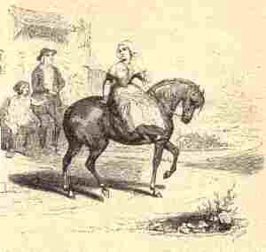
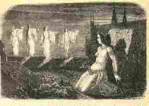

Baron Jaouioz
Ton(Do mineur)
Barzhaz Breizh (1839) ha Dornkrid Keransker 1
|
En bleu: passages dont l'authenticité est douteuse même sur le manuscrit de Keransker.
En rouge: passages omis ou complètement transformés (gras) dans la rédaction définitive. En vert: mots qui ont pu être mal interprétés par le collecteur ("anken" et "inkane"). En noir et gras: modifications de style dans la rédaction finale. En italiques: remarques |
In blue: possibly inauthentic passages though existing on Keransker MS.
In red: passages that are omitted or completely altered (bold) in final version. In green: possibly misconstrued by the collector ("anken" and "inkane"). In bold black: stylish "amendments" in final version. In italics: remarks. |
| Barzhaz Breizh | Dornskrid 1: stumm 1 | Dornskrid 1: stumm 2 | Dornskrid 1: stumm 3 |
|---|---|---|---|
|
I
1. Pa oan er stêr gant va dilhad (div wech) Me gleve 'n evn-gloud 'huanad (diou wech) 2. - Tinaig mad, ne ouzoc'h ket? D'ar baron J a oui o z oc'h gwerzhet. 3. - Gwir eo, va mamm, pez m'euz klevet, Ha da Jaouioz kozh on gwerzhet? 4. - Va merc'hig paour, n'ouzon ket; Digant ho tad her goulennit. 5. - Va zadig, din-me livirit, Ha da Loeiz Jaouioz on gwerzhet? 6. - Va merc'hig paour, n'ouzon ket; Digant ho preur her goulennit. 7. - Va breur Lannig, din lavarit, Ha d'an aotroù-se 'maon gwerzhet? 8. - Ya, d'ar baron c'hwi zo gwerzhet, Ha mond kuit ti-mad a vo red! 9. Ha mond kuit heb dale zo red; Ho kwerzh a zo digemeret: 10. Hanter-kant skoed en arc'hant gwenn Ha kemend-all en aour melen. - 11. - Va mammig, din-me livirit, Pe re dilhad a vo gwisket? 12. Va brozh ruz, pe va brozh c'hloan wenn Hag he-deus graet va c'hoar Helen? 13. Va brozhig wenn, pe va brozh ruz Pe va c'horkennig voulouz-du? 14. - Gwiskit an dilhad a garfec'h Va merc'h: kemend-se ne vern ket. . 15. Ur marc'h du zo e toull an nor, O c'hortoz an noz da zigor , 16. O c'hortoz da zigor an noz; Ur marc'h sterniet ouzh ho kortoz. -  II 17. Ne oa ket aet pell d'euz ar gêr, Pa glevas o son ar c'hleier. 18. Neuz' en em lakaas da ouelañ: - Kenavo dit , Santez Anna ; 19. Kenavo d'eoc'h, kleier va bro, Kleier va farrez, kenavo! - 20. Pa dremenas lenn an Anken, Tud varv welas, ur vandenn. 21. Gwelas tud varv, ur vandenn, E lestrigoù, gwisket e gwenn; 22. Gwelaz tud varv, ken-ha-ken, Rez he c'halon strake he dent. 23. Pa dremenaz traonioù ar Gwad, O gwelas d'he heul o lampat. 24. Kement he-devoa kalonad, Ken a kollas he skiant-vad.  III 25. - Tapet ur gador, hag aze'et O c'hortoz vo darev ar boued. - 26. An aotrou oa e-tal an tan Hag eñ ken du evel ur vran 27. E varv hag e vlev gwenn-kann He zaoulagad 'vel daou skod-tan. 28. - Setu amañ ur femelenn Emaon pell zo oc'h he goulenn 29. Deomp-ni, va merc'h, war ma brizoù Deomp-ni da ober va rannoù 30. A gambr e gambr deut-hu, va c'hoant Da gontañ 'n aour hag an arc'hant. 31. - Gwell ve din bout e ti va mamm Da gontañ 'r skolp da daol en tan 32. - Deut-hu ganin d'an traoñ d'ar sel Da dañva gwin ker c'hwek ha mel. 33. - Gwell ve din evañ dour ar prad Dimeus a ev roñsed va zad! 34. - Deut-hu ganin a stal da stal Da brenañ 'r pawisk da vragal ! 35. - Gwell ve din-me ur vrozh liennet, Mar va mamm he defe he graet 36. - Deomp-ni bremañ d'ar gwiskiri Klask brodoù da lakaat enni 37. - Gwell ve din an nac'henenn wenn A c'houri'e din va c'hoar Elen 38. - Hervez ar c'homzoù a lerit Aon am eus n'am c'haret ket. 39. Me gar ve bet ur gor em zeod En amzer emaon bet ker sot. 40. 'M eus bet ker sot eus da brenañ Pa 'n em frealzez gant netra! - IV 41. - Diwar ho nij, evnigoù kaezh, Me ho ped da selaou va mouezh; 42. C'hwi ya d'ar gêr, me ned' an ket, C'hwi zo laouen , me glac'haret 43. Va gourc'hemennoù a refet D'am holl vroïz, pa o gwelfet; 44. D'ar vammig he-deus va ganet Ha d'an tad en-deus va maget; 45. D'ar vammig he-deus va ganet D'ar beleg kozh 'n-eus va bade'et. 46. Kenavo d'an holl a larfet, Ha d'am breur emañ pardonet. - V 47. En daou pe dri miz goude-se A oa he zud en o gwele 48. En o gwele, ha kousket dous, En-dro dpmeus a hanternoz 49. Na diabarzh, na 'maez, neb trouz 'Toull an nor e klevjont ur vouezh dous: 50. - Va zad, va mamm, en an' Doue, Lakait pediñ evidon-me; 51. Pedit ivez, ha grait va c'hañv : Emañ ho merc'h war ar vazh-kañv. - |
P. 63
(3) Ma zadic paour din lavarit Ha da Jouiz emaon gwerzhet? (4) Ma merc'hig paour me n'ouzon ket. Digant ho mamm e goulennit! (5) Ma mamm etc. Digant ho c'hoar... (6) Digant ho preur... Ha balit gantañ pa garfec'h. (9) Ho payamant a zo touchet: (10) Pemp kant skoed en arc'hant gwenn Ha kemend-all en aour melen. (11) - Ma mammig paour, din lavarit Pe sort habit ha gwiskamant? (14) Gwiskit an habit a garfec'h Kar evidoc'h, ne gerzhfec'h ket. (15) War lost va inkane yefec'h. (20) Pa dremenas parkoù he zad Skoezhes e fark 'n he zaoulagad. (22) Pa dremenas stank an Anken Rez he galon e strake he dent. P. 64 (46) Larez kenavo d'he c'hanton Nemed pas da va breur fripon (25) - Tapit ur gador hag azezit! 'Gortoz prepariñ pred boued. (26) Mond a ran bremañ e tal an tan O koñdu ur jouiz bihan. Hag on ken du vel ur morvran (27) E zaoulagad giz daou skod-tan E c'henn toud e-leizh a loued (30) Deuit da weled deus gambr da gambr Da gontañ 'n aour di hag 'n arc'hant (31) - Gwell ve ganin 'barzh ti va mamm Da gontañ skolp da daol 'barzh an tan. (32) - Deuit da c'hunañ deus gav da gav Da dañva ur gwin deuz an dousañ. (33) - Gwell ve ganin evañ dour d'oc'h ar prad Lec'h ve eo roñsed va zad. (34) - Deuit amañ deus stal da stal Da choaz un habit inkarnat. (35) - Gwell ve ganin kaout 'r vrozh lien Mar 've ma mamm a refe din. (36) - Deuit amañ d'ar vestiri Da choaz bordoù da lakaad warni. (37) - Gwell ve ganin kaout nac'henenn wenn Mar 've ma mamm a refe din. (38) Hervez ar komzoù a larit Me 'm eus aon 'n em c'harit ket. (41) Evnedigoù diwar an nij Me ho ped da selaou va mouezh. Mond a ran bremañ war va prizoù (?) Da gomans gober va c'hañvoù. (43) Kassit gourc'hemennoù d'am broiz (44) D'ar vammig paour m'he-deus ganet Ha d'an tad ha m'e-neus maget. (45) D'ar beleg m'e-neus badezet (46) Mes d'am breur fripon na rit ket! |
P. 63
(1) Me ne oan...vat Nemed da vont da ster gant va dilhat. (3) Gwir eo va mamm p'ez 'm-eus klevet Ha da Jouiz emaon gwerzhet? (8) Va c'hoar red eo di voned (9) Rag ar payemant zo touchet. (26) An diwezhañ gwech doc'h an ti-mañ Jouiz a oa e-tal an tan, etc. (14) - Lakit hi gwisko an habit a garfe Rag evit kerzhed ne ray ket (15) Rag 'ma ur marc'h e toull an nor Ekipet mat da he gortoz (20) - Va merc'h ha pa passit parkoù ho tad Bouchit kloz ho taoulagad (21) Gant aon ne 'peufe kalonad - (22) Pa oa paset ar pont torchen ( Pontorson) Rez ... Debonjour, tud an ti-mañ, etc. (28) Setu amañ ur femelen M'edon pell-zo deuzhi ' goulenn. (31) Gwell ve da gontañ skolp leur-zi Mar ve va mamm a refe din (32) Deomp-ni bremañ d'ar selerioù Vit tañva gwin, etc. (34) Deomp-ni bremañ da stal (35) Deuit-hu ganin 'barzh ar jardin Da gutuilh ur bodig bleuñv fin (36) Salokras, me n'on ket, aotroù Me n'on ket ar plac'h bodigoù! (39) Me gar ve bet 'r viskoul em zeod En amzer emaon bet eus te preno (40) Pa 'n em gonfortez da netra. (41) Lapousigoù, diwar an nij (42) C'hwi ya d'an ger me ne ean ket (43) Va gourc'hemenoù a refec'h D'am mamm, d'am c'hoar ma o gwelfec'h (46) Hogen pas da va breur Louis (51) C'hwi laro d'am mamm ober va c'hañv Rag 'ma va c'horf war ar vazh-kañv. |
P. 65
(1) Pa oan er ster gand va dilhat Me a gle'e ar pig o krigac'had (2) "Ah, Janedik, c'hwi eo gwerzhet Da Jouiz kozh da pemp kant skoed!" (1) An evn glot gwitalat... Me gleviz al lapousig huanad... Me gleviz ar kregenenn italad... Lapousig ar Marv (la fressaie) hag an holl lapoused Doue. Doue a pregas ... ar pladedennoù bep rum (even glot). P. 63 (Skrivet gand kreion ha liv-pod) (17) Pell eus ar vro ne oa ket aet Pa glevas ar c'hleier soned (18) E gleve kleier Mari son O son da vont d'an oferenn bred (19) Neuze 'n em lakas o ouela "Adeo kleier Mari, adeo kleier ar vro!" P. 63 (a-istribilh) (20) Pa dremenas stank an Anken Tud varv welaz 'n ur vandenn (22) E lestrigoù, gwisket e gwenn Rez he c'halon strake he dent. (23) Pa dremenas parkoù ar gwad O welas d'he heul o lammat (24) Kement he-devoa kalonad, Kement serre he zaoulagat Hag a gollas he skiant-vat. (e-traoñ P. 63) (47) Ur pemp pe wec'h miz goude-se E oa he vamm en he gwele (48) En he gwele ha kousket dous En-dro demeus a hanter-noz (49) Ha na 'maez, na 'barzh ne oa trouzh Toull an nor glevas ur vouezh dous Evel mouezh ael ar baradoz (50) "Va mamm, va mamm! En añv Doue, Lakit da bediñ 'vidon-me! (51) Pedit ivez, ha grait va c'hañv Rag eo va c'horf war ar vazh-kañv!" |
Dornskrid Keransker 2 (1840-1841)
| Entre la publication dans "La Revue de Paris" en 1837 et la 2ème publication de ce chant dans le Bazhaz en 1845, La Villemarqué a donné des origines différentes à ce chant. Il ne se réfère plus une paysanne originaire de Lothéa, près de Quimperlé, rencontrée à Brocéliande, mais à une personnalité de la philologie celtique, Jean-François-Marie Le Gonidec. C'est peut être à celui-ci qu'on doit la version qui suit qui est presque sans surcharge, bien que la note au sujet de la "Tombe du Bon-Père" suggère que comme les chants qui précèdent et qui suivent, elle a été collectée dans la région de Leuhan. | Between the publication in "La Revue de Paris" in 1837 and the second publication of this song in the Bazhaz, in 1845, La Villemarqué indicated different origins to this song. He no longer refers to a peasant woman from Lothea, near Quimperle, he had encountered in Broceliande, but to a personality of Celtic philology, Jean-Francois-Marie Le Gonidec. It may be to this scholar that we owe the following version which is almost without overload, although the note about the "Grave of the Good Father" suggests that like the songs that precede and follow, it was collected in the Leuhan area. |
|
p.43 / 22
(1) Pa z'is d’ar foar d’ar Pont-'n-Abat, Ne oa soñj din nemet da vat. (2) Pa z'is d’ar ger kentañ ( Ar c'hentañ keloù a ) gleviz ] E oan-me ( klevout oan ) gwerzhet da Joioz (3) - Ma mammig paour din lavarit Gwir eo ar c’heloù m’eus klevet? (7) M'eus klevet an dud o laret Ha da Joioz e oan gwerzhet. (9) - Ya, gwir eo 'pez 'peus klevet: Rag ho pae a zo touchet (10) Ho tad ( preur ) en-deuz touchet tri-c'hant Hag ho preudeur pep a gant. (11) - Ma mammig paour leveret din Pesort a zae aio ganin. (13) - Ma merc’h ho sae violet A vo skañvoc’h d’eoc’h da gerzhed. - Ma mammig paour lavarit d’in ( en iliz ) Pelec’h er porched ( en iliz ) a stouin? - Ma merc'hik e kornig ar porched Lec’h ma zaoulin ar Jouisted ( c'hakoused ) p. 44 – Ma mammig paour lavarit din Pesort boutoù a ye gan-in? - Ma merc’h, ho potigoù-ler plat A vo skañvoc’h d’eoc’h da redek. Ar Jouis koz tal ar prenest, ( Raktal ) N’ur m’her c’hlevez a respontez : (14) - Lest hi gwiskañ sort ma gare (15) Ganin so karros d’hen douge. (17) - Pa dremenaz douar ma zad, Amzer-se, me oa mouchet mat. (20) Ha pa dremenaz ( Neuze pa oa e ) Pontorson Skoaz ar glac’har em c’halon (23) Mar ve e Karahes e jomfen Ne refen forz, me ne rajen (24) Pe oa deuet e bro ‘r Jouisted 'Walc’h he c’halonig a leñve. [ les 2 str. suivantes sont pécédées de traits verticaux ] (25) - Mard eo-me ar c’hrweg en ti-mañ, Tennit ( roit ) din ‘r gador d’azezañ. - N'eo ket peizant na peizantez A zeu en zi-man d’ober grweg... p. 45 / 23 (29) – Deomp-ni bremañ deus gambr da gambr Da gontañ 'n aour hag an arc'hant! (31) - Gwell ve ganin, mar welan vat, Da gontañ ‘r sklop e ti ma zat (34) - Deomp-ni bremañ deus stall da stall Da choaz ur pallenn inkarnal! (35) - Gwell ve ganin eur vroz vallin Mar ve ma mamm he grafe din (32) - Deomp-ni bremañ deus sel da zel Tañva ar gwin ken dous ha mel! (33) - Gwell ve ganin, gwell un hanter Evañ dour deus feunten ma c’her. - Deomp ni breman war menezioù Da glevañ son an trompilhoù! - Gwell ve ganin, eun hanterl gwell Kleout chas ma c’harter oc’h harzhel. - Allas ma dous, ma mestrez koant, ho komzoù a zo ker valiant, (38) Ho komzoù a zisplij d’am re, Ned int ket arouez karantez! - p. 46 (26) – Ar Jouiz kozh oa tal an tan, Ken du e benn ha pav ur vran: - Mar n’ouzout petra ober outi Kemer ur gontal ha lazh hi! - M' he losko vont endro d’he vro He Gwalenn d'Onn he gonduo... (41) - Lapousedigoù diwar nij, (43) Kasit gourc'hemenn d’al Leoniz ( d'ar Vroiz )! [ Les 3 str. suivantes: cf. k41, Ar c'hegell karn olifant, 31-33: Notées sur 2 colonnes ] Lavar d’e emaon tal an tan O vailhuriñ ur mab ( c'hakous ) bihan Ken du e vek vel pluñv ar vran. Ha pa domman-me e gein noazh, Leñvañ a ra evel d'ar c'haz! Ha pa hen droan en tu-all Gwazhoc'h-gwazh e teu da grial. An hini yaouank em c’hichen Krouget e vin mar n'eñ c’harfen – Note: Il y a dans le cimetière de Leuhan une tombe appelée "Bez an tad mad" [Tombe du bon père] sur laquelle on vient faire asseoir les enfants malades.. Simple pierre avec une croix double creusée (+), entourée de letonenn (gazon), sans nom. – C’est un Kersalaün peut-être. (+) Celles des bénédictins étaient ainsi faites. Voyez à Langonet. |
p.43 / 22
(1) Quand j’allais à la foire de Pont L’Abbé Je ne pensais pas à mal., (2) Quand je rentrai, la première chose que j’entendis Fut que j’étais vendue à Joioz. (3] - Ma pauvre mère, dites-moi Est-elle vraie cette nouvelle que j’ai entendue? (7] J’ai entendu les gens dire Que j’étais vendue à Joioz.. (9] - Oui, ce que vous avez entendu est vrai, Car on a encaissé le prix. (10) Votre frère a touché trois cents écus Et cent écus chacun de vos frères. (11) Ma pauvre mère, dites-moi Quelle robe faudrait-il que je mette? (13) - Ma fille, votre robe violette Elle sera plus légère pour marcher. - Ma pauvre mère, dites-moi, Où dois-je m'incliner dans le porche ( dans l’église ) ? - Ma pauvre fille, au coin du porche Là où la "Jouis"-erie ( lépreux ) s’agenouille. p. 44 - Ma pauvre mère, dites-moi Quelles chaussures mettrai-je ? Ma fille, vos souliers plats Vous seront plus légers pour courir. Le vieux "Jouis" près de la fenêtre En l’entendant, répondit : (14) - Laissez-la s’habiller à sa guise (15) J’ai un carrosse pour la transporter. (17) - Quand je passai la terre de mon père A ce moment, j’avais les yeux soigneusement bandés. (20) Et quand je passai Pontorson La douleur me frappa au cœur. (23) Si c’est à Carhaix que je devais aller, Je n’en ferais aucun cas. (24) Quand elle arriva au pays de la "Jouis"-erie Elle pleura de tout son cœur. (25) Si c’est moi l’épouse dans cette maison, Donnez-moi une chaise pour m’asseoir. - Ce n’est ni un paysan ni une paysanne Qui viendront dans ma maison en qualité d'époux. p. 45/23 (29) - Allons maintenant de chambre en chambre Compter l’or et l’argent (31) - Je préférerais, tout bien considéré, Compter les copeaux chez mon père. (34) - Allons maintenant de boutique en boutique Choisir une couverture (tenture) incarnat. (35) - J’aimerais mieux une robe faite d'une bâche Que ma mère m’aurait faite. (32) - Allons maintenant de cellier en cellier Goûter du vin aussi doux que le miel (33) - Je préférerais, et de loin, Boire de l’eau à la fontaine chez moi. - Allons maintenant sur les montagnes Entendre le son des trompettes. - Je préférerais, et de loin, Entendre les chiens de mon quartier aboyer. - Hélas ma douce, jolie maîtresse, Vos paroles expriment l'énergie (38) Vos paroles ne sont pas accordées aux miennes., Elles ne sont pas signe d’amour. Page 46 (26) - Le vieux Jouiz était près du feu La tête aussi noire que la patte d’un corbeau - Si tu ne sais que faire d’elle Prends un couteau et tue-la. - Je la laisserai retourner chez elle, Son "anneau de Frêne" la conduira, (41) - Les petits oiseaux dans leur vol Porteront mes salutations aux Léonards ( compatriotes ). Dites-leur que je suis près du feu À emmailloter un petit enfant ( lépreux ) A la frimousse aussi noire que la plume du corbeau, Et quand je réchauffe son dos nu Il pleure comme un chat Et quand je le retourne Il crie de plus en plus fort. Et cet enfant près de moi, Je serais pendue si je ne l’aimais. |
p.43 / 22
(1) When I went to the Pont L'Abbé fair I did not think of any wrong, (2) When I returned, the first thing I heard Was that I was sold to Joioz. (3) - My poor mother, tell me Is this news that I heard true? (7) I heard people say That I was sold to Joioz. .. (9) - Yes, what you have heard is true, Indeed they cashed the price. (10) Your father received three hundred crowns And a hundred crowns each of your brothers. (11) My poor mother, tell me What dress should I put on? (13) - My daughter, your purple dress It will be lighter for you to walk. - My poor mother, tell me, Where shall I incline my head in the porch ( in the church )? - My poor girl, at the corner of the porch Where the "Jouis"-people ( lepers ) kneel. p. 44 - My poor mother, tell me, What shoes shall I put on? My daughter, your flat shoes You will be lighter to run . The old "Jouis" near the window Hearing it, answered: (14) - Let her dress as she pleases (15) I have a carriage to carry her. (17) - When I passed my father's fields At that moment, I was carefully blindfolded. (20) And when I passed Pontorson The pain hit my heart. (23) If it was to Carhaix that I had to go, I would not have been so painful; - (24) When she arrived in the country of the"Jouis"-people She cried her heart out. (25) - If I am the housewife in this house, Give me a chair to sit on. - No country boy or no country girl Will ever come to my house and give orders. p. 45/23 (29) - Now let's go from room to room And count our gold and silver! (31) - I would rather, by far, Count the wooden chips in my father's workshop. (34) - Now let's go from shop to shop And choose a crimson blanket! (35) - I would prefer a rough linen dress That my mother would have made me. (32) - Now let's go from cellar to cellar And taste wine as sweet as honey! (33) - I would prefer, by far, To drink water at the fountain at home. - Now let's go to the mountains And hear the sound of trumpets! - I would prefer, by far, To hear the barking of dogs in my village. - Alas my sweet, pretty mistress, Your words are full of energy; (38) Your words are not attuned to mine. They are no tokens of love. Page 46 (26) - The old Jouiz was standing near the fire His head was as black as the leg of a raven - If you do not know what to do with her Take a knife and kill her. - No, I'll let her go home, Her "Ash-Tree's ring" shall lead her! (41) - Small birds in your flight Convey my greetings to my Leon compatriots. [The following 3 stanzas (in 2 columns) appear in k41 "Ar c'hegell karn olifant", st. 31-33.] Tell them I'm near the fire Swaddling a small ( leper ) child That is in the face as black as a raven's feather, And when I warm up his bare back He cries like a cat. And when I return him He cries louder and louder. And this child near me, I would be hanged if I were not a loving mother to him. Note: There is in the Leuhan cemetery a grave called "Bez an tad mad" [Tomb of the good father] on which sick children sit down .. It is a simple stone with a double cross engraved in it (+), surrounded by "letonenn" (grass ), nameless. - Maybe some Kersalaün. (+) Benedictine graves look that way. For instance in Langonet. |
Kempennet gant Christian Souchon
Ar Jouiz kanet gant Joséphine Bernard (dastumet gant YF Kemener)